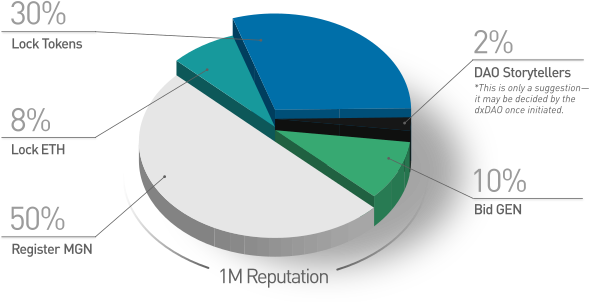

<template>
  <div class="dashboard-page animated-page au-animate">

    <header network.to-view="networkName"></header>

    <banner></banner>

    <div
      ref="dashboardElement"
      class="dashboard-main-content"
    >
      <div class="dashboard-header">
        <pageloading
          if.bind="loading"
          icononly="true"
          class="main-spinner"
        ></pageloading>
        
        <div class="title">Welcome to the dxDAO Vote Staking Interface</div>
      </div>

      <div class="propositionsSection">
        <div class="row">
          <div class="col-md-4 proposition">
            <div class="icon"></div>

            <div class="title first">Toward Super-Scalable Organizations</div>

            <div class="body">
              DAOs create a new design space for organizing globally. Within this design space, not only scalable but super-scalable organizations can be established, meaning that an organization's ability to efficiently coordinate actually increases as it grows. The dxDAO is a first attempt to create such an organization.
            </div>
          </div>
          <div class="col-md-4 proposition">
            <div class="icon"></div>

            <div class="title second">Decentralized and Autonomous</div>

            <div class="body">The degree of decentralization in any system encompasses not only its technical architecture, but extends to system governance itself. Today, there is a clear need for decentralized governance of decentralized software protocols. Responding to this need, the dxDAO is a next-generation tool for community stewardship of software protocols.</div>
          </div>
          <div class="col-md-4 proposition">
            <div class="icon"></div>

            <div class="title third">Holographic Governance</div>

            <div class="body">Super-scalable organizations have no hierarchies and support transparency. They are organizations which use market mechanisms to steer toward quality decisions and guide collective attention, allowing their stakeholders to achieve both modest tasks and megaprojects alike using the Holographic Consensus mechanism designed by DAOstack.</div>
          </div>
        </div>
      </div>

      <div class="schedule-section">
        <compose
          view-model="../schedule/schedule"
          model.to-view="scheduleModel"
        ></compose>
      </div>

      <div class="initializationSection">
        <div class="row">
          <div class="col-8 offset-2">
            <div class="title">The Vote Staking Period</div>
            <div class="body">
              <div class="body">

                <p>There is a 30-day initialization process, called the Vote Staking Period, during which participants can earn Reputation (voting power) in the dxDAO. The more Reputation held, the greater one’s voting power in the dxDAO governance phase.</p>
                <p>Participants in the Vote Staking Period will be competing against each other to earn Reputation. Anyone can earn Reputation in four categories through mechanisms designed to achieve a large degree of decentralization amongst dxDAO Stakeholders. These categories are:</p>
              </div>
              <div class="list-items">
                <div class="list-item"><span class="bullet">1</span>Locking ETH</div>
                <div class="list-item"><span class="bullet">2</span>Locking Tokens</div>
                <div class="list-item"><span class="bullet">3</span>Registering MGN tokens</div>
                <div class="list-item"><span class="bullet">4</span>Bidding GEN tokens</div>
                <div style="border-bottom: dashed 1px white; margin-bottom:.5rem"></div>
                <p>After Vote Staking Period</p>
                <div class="list-item"><span class="bullet">5</span>DAO Storytelling</div>
              </div>

              <div
                if.to-view="schemesLoaded && !canComputeReputation"
                class="box"
              >
                <p>See the <a
                    href="https://github.com/gnosis/dx-daostack/blob/master/dxdao-whitepaper-v1.pdf"
                    target="_blank"
                  >dxDAO whitepaper</a> and Participation Agreement for detailed information on all categories.</p>
                <p>
                  The Vote Staking Period will end on ${redeemingStartDate | date:'shortdate'}
                  at ${redeemingStartDate | date:{ format: 'amPmHourTz' }}).
                  After this time, earned Reputation (voting power) will be automatically distributed to participants.
                </p>
              </div>
            </div>
          </div>
        </div>
      </div>

      <div if.bind="avatarLoaded">
        <div class="schemesSection">
          <div if.bind="!schemesLoaded">
            <pageloading></pageloading>
          </div>
          <div else>
            <div
              class="row justify-content-around"
              id="accordion_arc_schemes"
              role="tablist"
              show.bind="dutchXSchemes.length"
            >
              <div class="col-12 col-lg-6">
                <div class="body">How do you plan to stake for your vote in the dxDAO?</div>
                <ul class="list-group clean dashboard-schemes">
                  <li
                    class="list-group-item"
                    repeat.for="scheme of dutchXSchemes"
                  >
                    <div
                      class="scheme-use-button"
                      data-toggle="collapse"
                      data-target="#${scheme.name}"
                      data-scheme="${scheme.name}"
                      aria-expanded="false"
                      aria-controls="#${scheme.name}"
                    >
                      <div class="row">
                        <div
                          class="col-1"
                          style="padding-left:0;padding-right:0"
                        >
                          <div class="scheme-icon">
                            
                            
                          </div>
                        </div>
                        <div
                          class="col-4"
                          style="white-space:nowrap; padding-top:.25rem;"
                        >
                          <div class="scheme-name">
                            ${scheme.friendlyName}
                          </div>
                        </div>
                        <div
                          class="col-6"
                          style="text-align:center; white-space:nowrap; padding-top: .25rem;"
                        >
                          <div
                            if.to-view="dutchXSchemeConfigs.get(scheme.name).hasActiveLocks && scheme.numLocks"
                            class="scheme-name activeLocks"
                          >${scheme.numLocks} active locks</div>
                          <div else>&nbsp;</div>
                        </div>
                        <div
                          class="col-1"
                          style="text-align:right;padding-left:0;padding-right:0"
                        >
                          <div class="scheme-name">
                            <div style="display:inline-block; width:100%; text-align: right;">
                              <div class="scheme-arrow-down"><span class="material-icons">keyboard_arrow_down</span></div>
                              <div class="scheme-arrow-up"><span class="material-icons">keyboard_arrow_up</span></div>
                            </div>
                          </div>
                        </div>
                      </div>
                    </div>
                    <div
                      id.bind="scheme.name"
                      class="scheme-dashboard collapse"
                      data-parent="#accordion_arc_schemes"
                    >
                      <compose
                        view-model.bind="getDashboardView(scheme)"
                        model.bind="schemeDashboardViewModel(scheme)"
                      ></compose>
                    </div>
                  </li>
                </ul>
              </div>
              <div class="col-12 col-md-5">
                <div class="pie-chart">
                  <div class="title">Vote Staking Period</div>
                  <div class="body">
                  </div>
                  <div class="chart">
                    
                    <div style="text-align:center">
                      <p>To participate, you can lock ETH or tokens whitelisted on the DutchX trading protocol, register Magnolia (MGN) earned by trading on the DutchX protocol, or <a
                          target="_blank"
                          href="https://medium.com/daostack/on-the-utility-of-the-gen-token-eb4f341d770e"
                        >bid GEN</a> in any of ten auctions throughout the 30 day Vote Staking Period.</p>
                      <p>You may participate with more than one method of staking for your vote, and you may bid GEN and lock ETH or tokens multiple times, with Reputation accumulating additively. You only need to register Magnolia (MGN) once, with the final amount of Magnolia registered in your wallet during the last 24 hours of the Vote Staking Period contributing toward your final Reputation award.</p>
                    </div>
                  </div>
                </div>
              </div>
            </div>
          </div>
        </div>

        <div class="redeemSection">
          <div class="row">
            <div
              class="col-6 offset-3"
              if.to-view="!canComputeReputation"
            >
              <div class="title">Reputation (Voting Power) Distribution</div>
              <div class="body">
                <p>When the dxDAO Vote Staking Period ends, the total amount of Reputation (voting power) you have earned will be assigned to the wallet address you used to participate during the Vote Staking Period. To benefit the most from future functionality, use the <a
                    target="_blank"
                    href="https://safe.gnosis.io/"
                  >Gnosis Safe</a> to stake for your vote.</p>
              </div>
            </div>

            <div
              class="col-6 offset-3"
              if.to-view="canComputeReputation"
            >
              <div class="title">Reputation (Voting Power) Distribution</div>
              <div class="body">
                The dxDAO Vote Staking Period ended on ${redeemingStartDate | date:'shortdate'}
                at ${redeemingStartDate | date:{ format: 'amPmHourTz' }}).
              </div>
              <div class="redeemables">
                <pageloading if.to-view="computingRedeemables">Thanks for waiting while we compute your earned reputation...</pageloading>
                <div else>
                  <div if.bind="canComputeReputation && totalUserReputationEarned.eq(0)">You have not earned any reputation</div>
                  <div if.bind="canComputeReputation && totalUserReputationEarned.gt(0)">
                    <div class="title">You Have Earned <floating-point-number
                        value.to-view="totalUserReputationEarned | ethwei"
                        precision="8"
                      ></floating-point-number>
                      (<floating-point-number
                        value.to-view="percentUserReputationEarned"
                        precision="4"
                      ></floating-point-number>%) Reputation:</div>
                    <div class="body">
                      <div class="breakdown">
                        <table class="table">
                          <thead>
                            <tr>
                              <th>Reputation</th>
                              <th>Through</th>
                            </tr>
                          </thead>
                          <tbody>
                            <tr repeat.for="redeemable of redeemables">
                              <td>
                                <floating-point-number
                                  value.to-view="redeemable.amount | ethwei"
                                  precision="8"
                                  placement="left"
                                ></floating-point-number>
                              </td>
                              <td>${redeemable.what}</td>
                            </tr>
                          </tbody>
                        </table>
                      </div>
                      <div>
                        <p>Now get ready for the Governance Phase to begin ${governanceStartDate | date:'shortdayofmonth'}. What will the first proposals be?</p>
                        <p>Reputation is not an ERC-20 token and will not appear in most wallets. To confirm on Etherscan you’ve received Reputation, follow [this tutorial].</p>
                      </div>
                    </div>
                  </div>
                </div>
              </div>
            </div>
          </div>
        </div>
      </div>
      <footer class="d-none d-lg-inline"></footer>
    </div>
</template>
